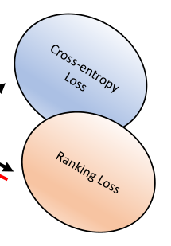

Learning to Hash with Graph Neural Networks for Recommender Systems (基于图神经网络的推荐哈希学习)
- 会议/期刊: WWW 2020 (The Web Conference)
- 作者与机构: Qiaoyu Tan, Ninghao Liu, Xing Zhao, Xia Hu (Texas A&M University)；Hongxia Yang, Jingren Zhou (Alibaba Group)
- 推荐链路定位: 召回（候选检索）
- 研究方向: 图神经网络与知识图谱推荐 / 协同过滤与双塔召回
- 论文原文: https://arxiv.org/abs/2003.01917v1
- 开源代码: 暂未开源
TL;DR (1分钟核心速览)
GNN 召回的瓶颈在于连续 embedding 线性扫描的 \(O(Nd)\) 开销。本文提出 HashGNN：GCN 编码器 + tanh 哈希层 + sign 二值化，端到端联合优化「链接重建交叉熵 + Hamming 空间 triplet 排序损失」，并用 Guidance STE（以连续 embedding 随机替换哈希码回传梯度并退火）解决 sign 梯度为零与 STE 梯度放大的矛盾。在 4 个数据集、全库未交互物品排序协议下，HR@50 相对 GraphSage 提升 4.1%–9.8%，Alibaba 上检索耗时降至 1/3.6。
Background & Motivation (背景与核心矛盾)
- 主流范式: 用 GraphSage/GCN 在 user-item 二部图上学习连续 embedding，召回阶段做内积全库扫描或 ANN 检索。
- 前人局限: ① 哈希方法多为「先学连续表征、再 sign 后处理二值化」的两阶段范式，优化目标与实际哈希目标偏离，量化误差大；② 以重建似然为唯一损失的深度哈希不保序，Hamming 球内难以聚合同偏好物品，导致二值检索精度显著低于连续 counterpart（图 1 中 GraphSage 的 HR 曲线远高于 HashNet/LSH）。
- 核心洞察 (Key Insight): STE 把 \(h\)的梯度原样拷回\(z\)，由于\(|z_j|\le 1 = |h_j|\)，每步更新尺度被系统性放大（作者以 Lemma 4.1 给出证明），等价于在连续学习问题上持续迈大步，训练抖动、易陷次优。
- 本文切入点: 既然 STE 与连续学习只差一个梯度放大因子，那就先用连续 embedding 引导训练、再退火回硬 STE。
Method (核心方法设计)
1. 整体框架 (Overall Architecture)
输入 user-item 二部图与节点特征，两层 mean-aggregator GCN 生成 \(d\)维中间表征\(u_i\)；全连接哈希层接\(\tanh\)得到\(K\)维连续码\(z_i\)，前向再经\(\mathrm{sign}(\cdot)\)得\(h_i\in\{-1,1\}^K\)。训练时哈希码与连续码通过伯努利掩码混合后参与损失计算，反向传播经 Guidance STE 同时更新 GNN 与哈希层参数。推理时输出\(h_i\)用于 Hamming 检索，\(z_i\) 用于候选精细重排，构成「纯哈希检索」与「哈希粗筛 + 连续精排」两种可切换模式。
flowchart TD
A["User-Item 二部图 + 节点特征"] --> B["两层 GCN (mean aggregator)"]
B --> C["哈希层: FC + tanh → z"]
C --> D["sign → h (K-bit)"]
C --> E["Guidance 混合: h_hat = Q⊙z + (1-Q)⊙h"]
D --> E
E --> F["L_cross 链接重建 + λ·L_rank Hamming 排序"]
F --> G["推理: Hamming 排序 / 分层检索"]
2. 关键设计拆解 (Key Designs)
- Hamming 空间的排序保持损失：重建损失只保证邻居相似，不保证「邻居比非邻居更近」。作者采样三元组 \((v_i,v_j,v_m)\)（\(v_j\)为正、\(v_m\)为负），用内积近似 Hamming 距离（\(\mathrm{hamdist}=\frac{1}{2}(K-\langle h_i,h_j\rangle)\)），施加 margin 排序约束\(\max(0,-\sigma(\langle h_i,h_j\rangle)+\sigma(\langle h_i,h_m\rangle)+\alpha)\)。直觉是：仅把相似节点拉近还不够，必须把正样本压进以\(v_i\)为中心的小 Hamming 球内，二值检索的 top-\(n\) 才有意义。
- Guidance STE（本文最核心增量）：针对 STE 梯度放大，训练时用 \(\hat{h}_i = Q\odot z_i + (1-Q)\odot h_i,\; Q\sim\mathrm{Bernoulli}(p)\)代替纯哈希码进入损失。\(p=1\)时模型退化为纯 GraphSage 连续学习（易优化），\(p\) 每 250 步衰减 5% 直至趋近硬 STE，把原始难解离散问题拆成一串由易到难的子问题。这一形式同时是 Dropout 的变体：以连续值而非零替换激活，起正则作用。
- 训练目标、负采样与推理开销：总损失 \(\mathcal{L}=\mathcal{L}_{cross}+\lambda\mathcal{L}_{rank}\)，负样本从未交互物品中均匀采样，每节点取 5 个三元组，\(\lambda=0.5\)、\(K=32\)为默认。推理无需负采样，Hamming 距离可用位运算/多级索引，复杂度由\(O(Nd)\)浮点乘法降为\(O(NK)\) 异或- popcount。
Experimental Setup & Evaluation Protocol (实验设置与评估协议)
- 数据集与预处理: 三个公开集 + 一个阿里工业集；二部图仅保留隐式交互（MovieLens 评分二值化为 0/1）。
| 数据集 | #Users | #Items | #Interactions | 稀疏度/密度 | 特征/场景说明 |
|---|---|---|---|---|---|
| MovieLens-1M | 6,040 | 3,952 | 1,000,209 | 4.19% | 电影评分，二值化 |
| Gowalla | 29,585 | 40,981 | 1,027,370 | 0.085% | LBSN 签到，≥10 交互过滤 |
| 55,187 | 9,916 | 1,500,809 | 0.274% | 图像 pin，每用户 ≥20 交互 | |
| Alibaba | 601,946 | 4,167,708 | 28,489,957 | 0.0011% | 阿里线上点击/加购/购买 |
- 数据划分与防穿越 (Splitting Strategy): 前三个数据集按每用户随机 70%/10%/20% 划分 train/valid/test（非时间序）；Alibaba 采用全局时间戳切分——前 6 天训练、第 7 天测试，符合线上防穿越要求。
- 排名评测协议 (Ranking Protocol): 无偏 Full-Ranking——测试时将该用户所有未交互物品作为候选负样本参与全库排序，不做负采样；指标为 HR@50/100 与 NDCG@50/100。
- 对比基线与超参设置: 基线含网络嵌入类（MF、PTE、BiNE、GraphSage）、哈希类（LSH、HashNet、Hash_gumb、Hash_ste）及两个受控变体（HashGNN_sp 分离训练、HashGNN_nr 去排序损失）。统一两层 GCN（128→68 维），Adam、batch 256、lr 0.001，\(K=32\)，\(\alpha=0.2\)。
Key Experimental Results (实验关键数据)
1. 主实验对比 (Main Results)
分层检索（Hierarchical Search，哈希粗筛 + 连续重排）结果：
| 方法 | MovieLens HR@50 | MovieLens N@50 | Gowalla HR@50 | Gowalla N@50 | Pinterest HR@50 | Pinterest N@50 |
|---|---|---|---|---|---|---|
| LSH | 0.063 | 0.143 | 0.165 | 0.282 | 0.044 | 0.066 |
| Hash_gumb | 0.136 | 0.234 | 0.264 | 0.452 | 0.098 | 0.104 |
| Hash_ste | 0.145 | 0.249 | 0.331 | 0.485 | 0.126 | 0.127 |
| HashNet | 0.185 | 0.266 | 0.346 | 0.502 | 0.169 | 0.147 |
| MF | 0.187 | 0.276 | 0.345 | 0.504 | 0.041 | 0.104 |
| BiNE | 0.209 | 0.283 | 0.363 | 0.515 | 0.109 | 0.117 |
| GraphSage (连续) | 0.228 | 0.304 | 0.389 | 0.542 | 0.193 | 0.166 |
| HashGNN | 0.248 | 0.325 | 0.405 | 0.551 | 0.212 | 0.176 |
| Improv. vs GraphSage | +8.8% | +6.9% | +4.1% | +1.7% | +9.8% | +6.0% |
| Improv. vs HashNet | +34.1% | +22.2% | +17.1% | +9.8% | +25.4% | +19.7% |
工业集 Alibaba（分层检索）：HashGNN HR@50/100 = 5.17%/10.66%，NDCG@50/100 = 7.75%/12.84%；超过连续基线 GraphSage（4.73%/9.86%）、最强哈希基线 HashNet（3.63%/7.37%）与 BiNE（3.94%/8.29%）。
推理耗时（秒，全库线性扫描）：
| 数据集 | 连续检索 CeS | 分层检索 HieS | 纯 Hamming HamR |
|---|---|---|---|
| MovieLens | 3.8 | 2.8 (×1.3) | 1.5 (×2.5) |
| 73.5 | 41.2 (×1.7) | 27.8 (×2.6) | |
| Gowalla | 189.6 | 82.1 (×2.3) | 66.1 (×2.8) |
| Alibaba | 15181.7 | 4295.8 (×3.5) | 4163.9 (×3.6) |
2. 消融实验 (Ablation Study)
分层检索 HR@50：
| 变体 | MovieLens | Gowalla | 说明 | |
|---|---|---|---|---|
| HashGNN (Full) | 0.248 | 0.405 | 0.212 | 完整模型 |
| w/o Ranking Loss (HashGNN_nr) | 0.223 | 0.378 | 0.189 | 仅链接重建 |
| w/o Guidance (Hash_ste) | 0.145 | 0.331 | 0.126 | 标准 STE |
| w/o Joint Training (HashGNN_sp) | 0.108 | 0.219 | 0.052 | 两阶段，先 GraphSage 后哈希层 |
| w/o Rank. & Joint (HashNet) | 0.185 | 0.346 | 0.169 | 连续松弛 + 后二值化 |
| w/o 二值化 (GraphSage) | 0.228 | 0.389 | 0.193 | 纯连续表征上界参照 |
3. 关键实验发现 (Key Findings)
- Guidance STE 是最大增益来源，而非排序损失：MovieLens 上从 Hash_ste 的 0.145 提升到 HashGNN_nr 的 0.223（+53.8%），远超排序损失带来的 0.223→0.248（+11.2%）。这定量印证了「离散优化的梯度噪声才是二值哈希落后于连续嵌入的主因」，而非目标函数缺失保序性。
- 联合训练不可替代：HashGNN_sp（先训练 GraphSage 再训哈希层）仅 0.108，说明哈希层不能脱离 GNN 表征独立拟合，端到端反传是二值码可用的前提；而 \(p\)分析显示\(p\)固定或\(p<0.5\) 时性能下降，动态退火显著最优。
- 效率与精度非零和：Alibaba 上纯 Hamming 检索 4163.9s，仅为连续检索 15181.7s 的 1/3.6，而 HR@50 反而高于 GraphSage（5.17% vs 4.73%），说明排序损失把「保序信息」编码进了二值码；\(K\)从 16 增至 64 时 HR@100 单调上升但边际递减，\(K=32\) 是性价比拐点。
Highlights & Limitations (亮点、对比与审稿批判)
- 与代表作对比 (vs. Prior Work): 相比 LSH/两阶段哈希，本文把量化误差纳入端到端优化；相比 HashNet 的 \(\tanh(\beta z)\)连续松弛，本文前向始终输出严格\(\pm 1\) 码，不存在训练-推理目标不一致；相比标准 STE，用退火式连续引导把梯度放大问题转化为课程学习问题，这是最主要的理论/工程增量。
- 可迁移亮点: ①「连续–离散混合激活 + 概率退火」可迁移到语义 ID 量化、RQ-VAE 码本坍缩等生成式推荐的离散瓶颈；②在召回目标里显式加入 triplet 保序项，可推广到任何以 Hamming/量化距离为度量空间的检索场景。
- 审稿级局限批判: ① 前三个数据集的 70%/10%/20% 是随机划分而非时间切分，存在未来交互泄漏风险，只有 Alibaba 做了时间切分，削弱了公开集结论的外部效度；② 效率对比全部基于单机 Python 线性扫描，未使用多表 LSH/IVF 索引，\(O(N)\)扫描对十亿级物品的真实加速比可能被高估；③ 二值码表达容量受\(K\) 强约束（默认仅 32 bit），在长尾/高基数物品集上的召回上限未做分桶分析。
Rating (四维评分)
- 方法创新性 (Novelty): ⭐⭐⭐⭐ （Guidance STE 从梯度放大角度重释离散优化难点，并给出 Lemma 4.1 的定量论证，思路简洁且有别于 HashNet 的连续松弛路线）
- 评估协议与实验扎实度 (Protocol & Experiments): ⭐⭐⭐⭐ （采用无偏 Full-Ranking 且覆盖阿里工业集与耗时对比，但公开集随机划分未做时间切分、缺少显著性检验与长尾分桶）
- 写作与数学规范度 (Clarity & Rigor): ⭐⭐⭐⭐ （符号统一、Lemma 证明清晰，Hamming 与内积的关系交代到位；但 \(Q\)混合后的前向一致性与\(p\) 退火调度理论依据略简）
- 工业落地与复现价值 (Industrial & Practical Value): ⭐⭐⭐⭐⭐ （哈希检索天然支持位运算与多级索引，实测 3.5–3.6 倍加速且精度不降，对大规模召回的工程收益直接；遗憾未开源）